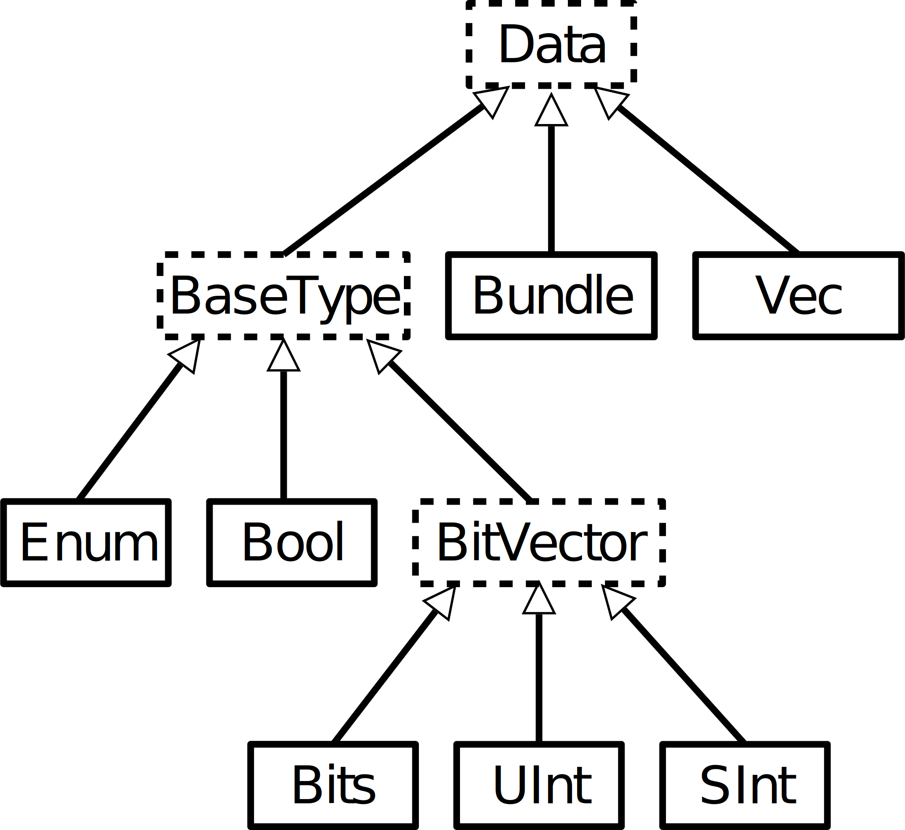

| Basic Types |
|

|
Bool |
| Bits/UInt/SInt([x bits]) |
| Vec(dataType:Data, size:Int) |
object myEnum extends SpinalEnum([encoding]){
val IDLE, STATE1 = newElement()
}
|
| Encoding Type for Enum are native, binarySequencial, binaryOneHot |
| Literal |
| Bool(boolean) |
val myBool = Bool(4 < 2 ) |
| True, False |
val myBool = True |
| B/U/S(value:Int[,x bits]) |
val myUInt = U(13, 32 bits) |
| B/U/S”[[size’]base]value” |
val myBits = B"8'hA3" // h,d,b,x,o |
| B/U/S”binaryNumber” |
val myBits = B"0110" |
| M”binaryNumber” |
val itMatch = myBits === M"00--10--" |
| Assignments |
| x := y |
VHDL, Verilog <= |
| x <> y |
uartCtrl.io.uart <> io.uart //Automatic connection |
| x \= y |
VHDL :=, Verilog = |
| x.assignFromBits(Bits) |
Can be used to assign enum to Bits |
|
x.assignFromBits(Bits,hi:Int,lo:Int), x.assignFrom(Bits, offset:Int, bitCount:BitCount)
|
| Range |
| myBits(7 downto 0) //8 bits |
myBits(0 to 5) //6 bits |
| myBits(0 until 5) //5 bits |
myBits(5) //bit 5 |
| myUInt := (default -> true) |
myUInt := (myUInt.range -> true) |
| myUInt := (3 -> true, default -> false) |
myUInt := ((3 downto 1) -> true, default -> false) |
| val myBool = myUInt === U(default -> true) |
| Register |
| val r = Reg(DataType) |
val r = RegInit(U"010") |
| val r = RegNext(signal) |
val r = RegNextWhen(signal,cond) |
| Function : .set(), .clear(), .setWhen(cond), .clearWhen(cond), .init(value), .randBoot() |
| Conditional |
when(cond1){
//when cond1 is true
}.elsewhen(cond2){
//when (not cond1) and cond2
}.otherwise{
//when (not cond1) and (not cond2)
}
|
switch(x){
is(value1){
//when x === value1
}
is(value2){
// when x === value2
}
default{
//default code
}
}
|
| val res = cond ? whenTrue | whenFalse |
val res = Mux(cond,whenTrue,whenFalse) |
val bitwiseResult = myBits.mux(
0 -> (io.src0 & io.src1),
1 -> (io.src0 | io.src1),
default -> (io.src0)
)
|
myBits := Select(
cond1 -> value1,
cond2 -> value2,
default -> value3)
|
| Assertion |
assert(
assertion = cond1,
message = "My message",
severity = ERROR // WARNING, NOTE, FAILURE
)
|
| Units |
| Hz, kHz, MHz, GHz, THz |
val freq:BigDecimal = 1 kHz |
| fs, ps, ns, us, ms, s, mn, hr |
val time:BigDecimal = 2 ms |
| Bytes, Byte, KiB, MiB, GiB, TiB |
val size:BigInt = 4 MiB |
| bits, bit |
val myBits:BitCount = 3 bits |
| exp |
val myExp:ExpNumber = 5 exp |
| pos |
val myPos:PosCount = 2 pos |
|
| Operator |
|
!x |
x + y
x - y
x * y
|
x < y
x > y
x <= y
x >= y
|
x =\= y
x === y
|
x >> y
x << y
|
x ^ y
x | y
x & y
|
~x |
x && y
x || y
|
x ## y
|
x @@ y
|
| Bool |
✔ |
|
|
✔ |
|
✔ |
|
✔ |
✔ |
|
| SInt/UInt |
|
✔ |
✔ |
✔ |
|
|
|
|
|
✔ |
| Bits |
|
|
|
✔ |
✔ |
✔ |
✔ |
|
✔ |
|
Bits
SInt
UInt |
.resize(y:Int), .resized, .range, .high, x(hi,lo), x(offset,width), x(index)
.xorR, .orR, .andR, .clearAll, .setAll, .setAllTo(Boolean), setAllTo(Bool),
.msb, .lsb
|
| Bool: |
.set, .clear, .rise[(init)], .fall[(init)], .setWhen(cond), .clearWhen(cond)
|
| Bits: |
.rotateLeft(y:UInt) |
| in/out, master/slave |
in/out Bool, in/out Bits/UInt/SInt[(x bits)], in/out(T) // Create input/output
|
|
master/slave Stream/Flow[T], master/slave(T) // Provide by the spinal.lib
|
| Bundle |
case class RGB(width:Int) extends Bundle{
val red, green, blue = UInt(width bits)
def isBlack = red === 0 & green === 0 & blue === 0
}
|
val io = new Bundle{
val a = in Bits(32 bits)
val b = in(MyType)
val c = out UInt(32 bits)
}
|
class Bus(val config: BusConfig) extends Bundle {
val addr = UInt(config.addrWidth bits)
val dataWr, dataRd = Bits(config.dataWidth bits)
val cs,rw = Bool
def asMaster(): this.type = {
out(addr, dataWr, cs, rw)
in(dataRd)
}
def asSlave(): this.type = this.asMaster().flip() //Flip reverse all in out
}
val io = new Bundle{
val masterBus = Bus(BusConfig).asMaster()
val slaveBus = Bus(BusConfig).asSlave()
}
!! Thanks to the Lib this code can be written different (cf master/slave interface on Lib Sheet) !!
|
| Area |
val myCounter = new Area{
val tick = Bool
...
}
io.output := myCounter.tick
|
| Component |
class AndGate(width : Int) extend Component{
val io = new Bundle{
val value = out Bits(width bits)
val in1,in2 = in Bits(width bits)
}
io.value := io.in1 & io.in2
}
|
| ClockDomain |
| Configuration |
val myConfig = ClockDomainConfig(
clockEdge = RISING, // FALLING
resetKind = ASYNC, // SYNC, BOOT
resetActiveLevel = LOW, // HIGH
softResetActiveLevel = LOW, // HIGH
clockEnableActiveLevel = LOW // HIGH
)
|
| Clock Domain |
val myCD = ClockDomain(ioClock,ioReset, myConfig) |
| Area |
val coreArea = new ClockingArea(myCD){
val myReg = Reg(UInt(32 bits)) //Reg clocked with ioClock
...
}
|
| External Clock |
val myCD = ClockDomain.external("myClockName") |
| ClockDomain.current.frequency.getValue//Return frequency of the clock domain |
|
| Fixed Point |
| UFix/SFix(peak, resolution) |
val q1= SFix(8 exp, -2 exp) |
| UFix/SFix(peak, width) |
val q0 = SFix(8 exp,11 bits) |
| Operator : |
|
| sub, add, multiplication |
x+y, x-y, x*y |
| shift |
x<<y, x>>y, x>|y, x<|y |
| Comparaison |
x>y, x<y, x>=y, x<=y |
| Cast : myUFix.toUInt, mySFix.toSInt, myUInt.toUFix, mySInt.toSFix |
| Function : .maxValue, .minValue, .resolution |
| BlackBox |
class CurstomRam(_wordWidth: Int) extends BlackBox {
val generic = new Generic {
val wordWidth = _wordWidth
}
val io = new Bundle {
val clk = in Bool
val wr = new Bundle {
val en = in Bool
...
}
}
mapClockDomain(clock=io.clk)
}
val ram = new CurstomRam(16) //Use as a component
|
|
| Cast |
| myBool.asBits/asUInt/asSInt |
| myBits.asBool/asUInt/asSInt |
| myUInt.asBool/asBits/asSInt |
| mySInt.asBool/asBits/asUInt |
|
| Attribute |
| addAttribute(name) |
| addAttribute(name.value) |
|
| RAM |
| Declaration |
val myRAM = Mem(type,size:Int) // RAM
val myROM = Mem(type,initialContent : Array[Data]) // ROM
|
| Write access |
mem(address) := data
mem.write(address, data, [mask])
|
| Read access |
myOutput := mem(x)
mem.readAsync(address,[readUnderWrite])
mem.readSync(address,[enable],[readUnderWrite], [clockCrossing])
|
| BlackBoxing |
mem.generateAsBlackBox() //Explicitly set a memory to be a blackBox
def main(args: Array[String]) {
SpinalConfig()
.addStandardMemBlackboxing(blackboxAll) //Option: blackboxAll,
//blackboxAllWhatsYouCan, blackboxRequestedAndUninferable
// blackboxOnlyIfRequested
.generateVhdl(new TopLevel)
}
|
| readUnderWrite |
dontCare, readFirst, writeFirst |
| Technology |
mem.setTechnology(auto) // auto, ramBlock, distributedLut, registerFile |
Mixed
width
RAM |
mem.writeMixedWidth(address, data, [readUnderWrite])
mem.readAsyncMixedWidth(address, data, [readUnderWrite])
mem.readSyncMixedWidth(address, data, [enable], [readUnderWrite],
[clockCrossing])
mem.readWriteSyncMixedWidth(address, data, enable, write, [mask],
[readUnderWrite], [crossClock])
|
|
| HDL Generation |
| SpinalVhdl(new MyTopLevel()) // Generate VHDL file |
| SpinalVerilog(new MyTopLevel()) // Generate Verilog file |
|
SpinalConfig :
mode, debug, defaultConfigForClockDomains, onlyStdLogicVectorAtTopLevelIo, defaultClockDomainFrequency, targetDirectory, dumpWave, globalPrefix, device, genVhdlPkg, phasesInserters, transformationPhases, memBlackBoxers
|
SpinalConfig(
mode = Verilog, // VHDL
targetDirectory="temp/myDesign",
defaultConfigForClockDomains = ClockDomainConfig(clockEdge=RISING, resetKind=ASYNC),
defaultClockDomainFrequency = FixedFrequency(50 MHz),
OnlyStdLogicVectorAtTopLevelIo = true
).generate(new myComponent())
|
| SpinalConfig(dumpWave = DumpWaveConfig(depth = 0)).generateVhdl(new MyComp()) //Gen wave file |
| SpinalConfig(globalPrefix="myPrefix_").generateVerilog(new MyTopLevel()) // Add a prefix to the package |
| SpinalVhdl(new myTopLevel()).printPruned() // Print all signals not used |
def main(args: Array[String]): Unit = {
SpinalConfig.shell(args)(new UartCtrl()) // Config from shell
// Option : --vhdl, --verilog, -o, --targetDirectory
}
|
| Template |
import spinal.core._ // import the core
class MyTopLevel() extends Component { //Create a Component
val io = new Bundle {
val a,b = in Bool
val c = out Bool
}
io.c := io.a & io.b
}
object MyMain {
def main(args: Array[String]) {
SpinalVhdl(new MyTopLevel()) //Generate a VHDL file
}
}
|
| Utils |
| log2Up(x : BigInt) |
Number of bit needed to represent x |
| isPow2(x : BigInt) |
Return true if x is a power of two |
| roundUp(that : BigInt, by : BigInt) |
Return the first by multiply from that (included) |
| Cat(x : Data*) |
Concatenate all arguments |
| Function |
// Function to multiply an UInt by a scala Float value.
def coef(value : UInt,by : Float ) : UInt = (value * U((255*by).toInt,8 bits) >> 8)
|
|
def clear() : Unit = counter := 0 // Clear the register counter
|
def sinus(size:Int, res:BitCount) = {
(0 to size).map (i => U((Math.sin(i)+1) * Math.pow(2,res.value)/2).toInt)
}
val mySinus = Mem(UInt(16 bits), sinus(1024, 16 bits)) // memory init with a sinus
|
|